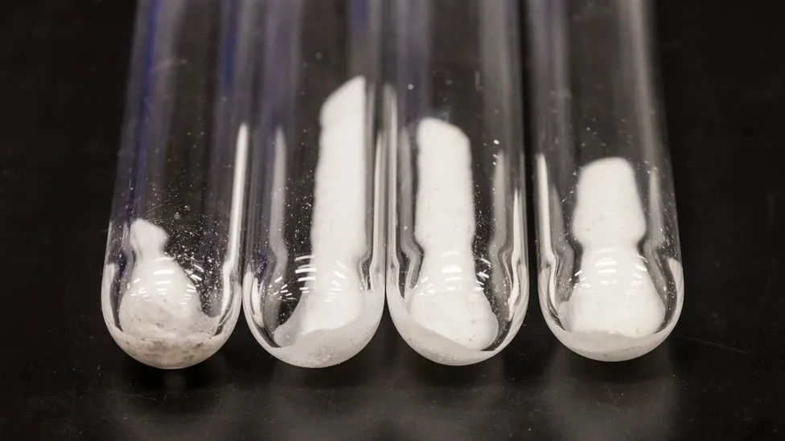

Published 2 hours ago
Samples of the new solid electrolyte discovered by Microsoft AI and HPC tools
By Shiona McCallum
Technology reporter
A brand new substance, which could reduce lithium use in batteries, has been discovered using artificial intelligence (AI) and supercomputing.
The findings were made by Microsoft and the Pacific Northwest National Laboratory (PNNL), which is part of the US Department of Energy.
Scientists say the material could potentially reduce lithium use by up to 70%.
Since its discovery, the new material has been used to power a lightbulb.
Microsoft researchers used AI and supercomputers to narrow down 32 million potential inorganic materials to 18 promising candidates in less than a week - a screening process that could have taken more than two decades to carry out using traditional lab research methods.
The process from inception to the development of a working battery prototype took less than nine months.
The two organizations achieved this by using advanced AI and high-performance computing which combines large numbers of computers to solve complex scientific and mathematical tasks.
Executive vice president of Microsoft, Jason Zander, told the BBC one of the tech giant's missions was to "compress 250 years of scientific discovery into the next 25".
"And we think technology like this will help us do that. This is the way that this type of science I think is going to get done in the future," he said.
Published on: 12.5.2019
Author: Shiona McCallum
Learn more